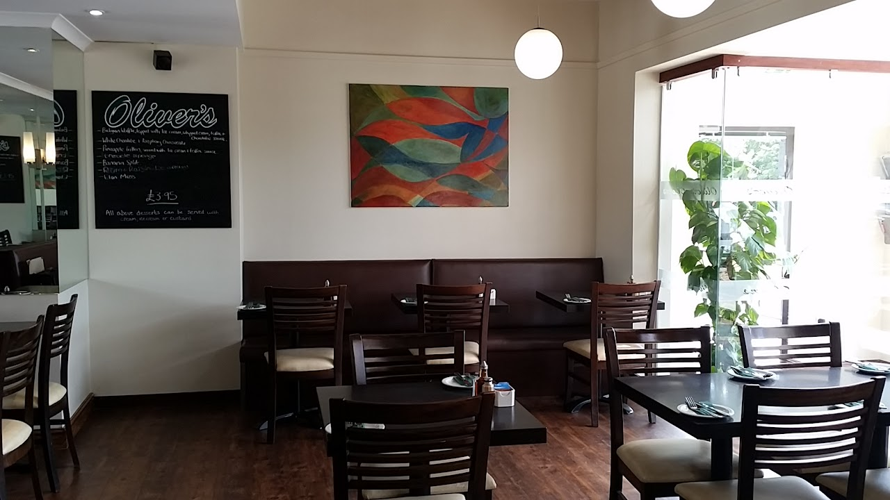
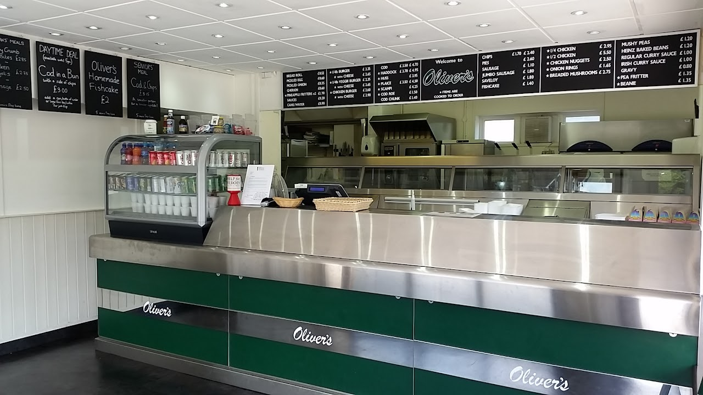

Oliver's has been serving great Fish & Chips to the people of Basingstoke & North Hampshire since 1974. We're a family-run business proud of our reputation for quality, taste, and friendly service.
We began life as a takeaway named "The Big Fry". The restaurant was added in 1989 and we changed our name to Oliver's. (Trivia Fans: our corner plot used to be known as Oliver's Corner due to the area's association with Oliver Cromwell).
We're conveniently located on the A30, parallel to the M3 between Jnct 6 Basingstoke & Jnct 5 Hook. We have our own private car park.
Whether you visit us for a quick takeaway on the way home from work, bring the children for a tea-time treat, or you wish to make an evening of it in our fully licensed restaurant, Oliver's is ready to welcome you.

